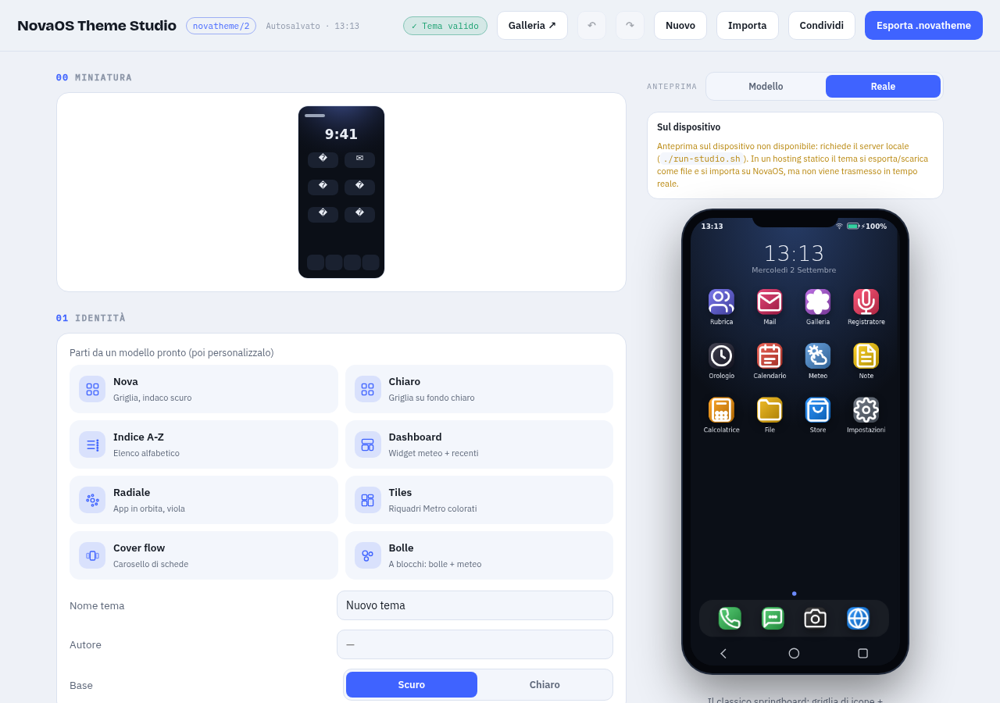
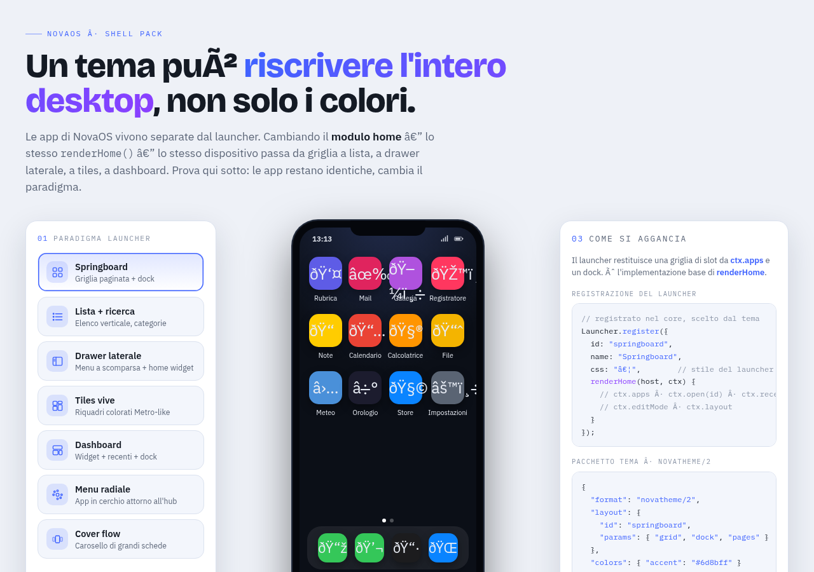

Per chi crea
Il costruttore di temi per NovaOS: un editor visuale, gratuito e che
gira interamente nel browser, per progettare e condividere un tema
.novatheme/2 — launcher, colori, icone, suoni e layout a blocchi — senza
scrivere una riga di codice. Un tema non cambia solo i colori: può ridisegnare
l'intera home di NovaOS.
Demo pubblicata su GitHub Pages · funziona senza server · i tuoi progetti restano nel browser
L'editor è incorporato qui sotto: scegli un modello pronto o parti da zero, modifica colori, launcher e icone, poi Esporta il tema e importalo su NovaOS da Impostazioni → Display → Importa tema. Per lavorare a schermo intero apri la demo live.
Un tema è un file JSON (un solo file, da condividere o importare) che descrive
un'intera identità per NovaOS. La versione novatheme/2 porta anche il
desktop: NovaOS può cambiare paradigma di home (griglia, elenco, dashboard,
radiale, tiles, cover flow, indice alfabetico, blocchi) semplicemente applicando un tema.
// un estratto del formato (semplificato)
{
"format": "novatheme/2",
"meta": { "id": "mio-tema", "name": "Il mio tema", "base": "dark" },
"colors": { "bg": "#0b0f17", "surface": "#151a24", "accent": "#6a63f0" },
"layout": { "id": "springboard", "order": ["phone","messages","camera"] },
"icons": { "style": "filled", "shape": "squircle", "map": {} },
"wallpaper": { "type": "gradient", "value": "linear-gradient(135deg,#1b2a4a,#0b0f17)" },
"sounds": { "ringtone": "nord", "notify": "pop" }
}
Anche l'anteprima interattiva dei launcher è pubblicata: una sola home NovaOS che cambia paradigma su app invariate — apri la galleria launcher.


.novatheme (o aprilo da un link/catalogo).NovaOS resta un sistema minimale: il motore dei temi vive dentro la shell (leggerissimo,
applica colors/layout/icons/…), mentre la creazione è un'attività da scrivania
che vive qui, in un progetto indipendente e completamente statico. Nessuna dipendenza esterna,
nessun server, nessun account: il Theme Studio è una pagina web che funziona anche offline dopo
il primo caricamento.